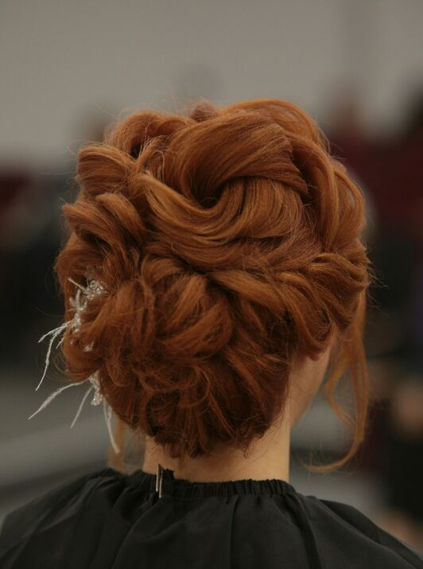

More than
a salon
At Larkspur, every appointment is meant to feel like an hour that belongs only to you. From the first hello at the front desk to the final mirror check, our job is to make your visit calm, personal and genuinely enjoyable.

How we became
Larkspur


Larkspur started as a small blowout bar with four chairs and a simple idea: great hair should come with real conversation and a little breathing room. Guests came in for a quick style, stayed for the atmosphere, and kept coming back.
Since then we’ve grown into a full-service salon offering custom color, precision cutting, extensions, restorative treatments, makeup, brows, lashes and a dedicated bridal team — but the feeling of those first four chairs hasn’t changed.
The space still reflects what our guests have always loved: bright, relaxed and a little bit polished, with individual styling stations, an open blowout bar and an atmosphere that invites you to slow down.
Because at Larkspur, luxury isn’t about extravagance — it’s about being looked after properly and leaving feeling like the best version of yourself.
Meet Claire
Hi, I’m Claire Whitmore, founder of Larkspur. I opened the salon because I wanted a place where every guest is treated like a regular from their very first visit — where the coffee is good, the conversation is easy and the work is consistently excellent.

Larkspur is built on thoughtful service, talented artists and real relationships. Whether you’re in for a blowout, a color refresh, bridal beauty or a quiet hour to yourself, my goal is to make every detail feel considered.
When I’m not on the salon floor, I’m mentoring our team, planning new guest experiences and celebrating the clients who have become part of the Larkspur family. We’d love for you to come and see what makes this place special.
Tucked into
Bellwood Commons
You’ll find us in Bellwood Commons, between the bakery and the bookshop, with easy parking right out front. Plenty of locals still tell us they had no idea we were here — so consider this your invitation to stop by.
Ashford, TN
Ashford, TN 37210

Your chair
is waiting
Whether you’re joining us for a signature blowout, fresh color, extensions or a little time to recharge, we can’t wait to welcome you to Larkspur.

